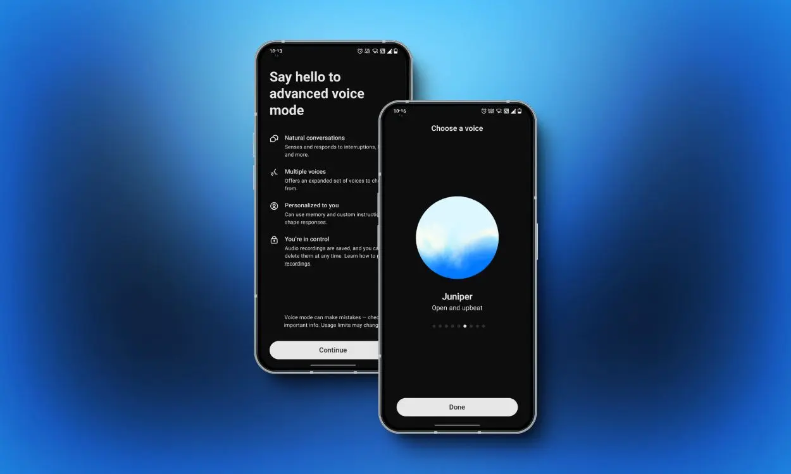

ChatGPT as a Mock Interviewer
Context
Over the past few weeks, I’ve been preparing for upcoming internship interviews! Many people suggest mock interviewing with others, but I feel bad asking someone to listen to me talk for so long and subjecting them to my rambles. Not only that, but I’ve found that rehearsing answers and practicing “in my head” are completely ineffective – when someone asks me a question in real time, I freeze up and don’t know what to say.
So, I turned to ChatGPT as a prep partner, using it as a coach, mock interviewer, and critic!

I used ChatGPT across all areas of interview preparation: coming up with answers, verbally delivering the answers, and receiving feedback. This blog outlines how LLMs assisted me across all these stages!
Stage 1: Answers
To optimize the feedback that ChatGPT gave me on behavioral questions (“Tell me about a time when you led a team,” “Tell me about a time when you failed”), I needed to provide it with extensive context on my previous experiences. To do this, I uploaded two files to my project folder: 1) my resume and 2) a longer, more narrative-driven document, where I keep a running log of the details and lessons I’ve learned from my previous experiences.
By giving ChatGPT this context, I was even able to ask it to “read between the lines” my experiences to extract core themes that could be applied to any behavioral question. In fact, this was the most useful aspect of using an LLM to prepare for behavioral questions – with the right prompting, it could even point out patterns in my experiences that I hadn’t noticed before!
Stage 2: Verbal Delivery
To practice verbally delivering my answers, I made use of ChatGPT’s voice feature. I provided it with a bank of questions and then prompted it to act like an interviewer and choose one at random. In this stage, it wasn’t much about what ChatGPT could say to me – it was most useful in creating a space to simulate the surprise of getting a question at random and having to answer it on the spot.
Stage 3: Feedback
Previous versions of ChatGPT (GPT-4o) have been accused of being too sycophantic – being overly flattering and agreeable to the user. While this attribute has been claimed to be addressed in the GPT-5 update, which is what I was using, I still always made sure to prompt the model to be “brutally honest.” Doing so forced the LLM to give more critical feedback on my response, which is where the real improvement in my responses was made! Additionally, prompting ChatGPT to “act as a product director” and “apply best frameworks and relevant practices” (since I was interviewing for product management roles) produced extremely good results.

Reflections
Utilizing ChatGPT was an incredibly valuable part of my interview preparation. Psychologically, it was great to have a low-stakes and always readily available “interviewer” – when walking in between classes, I could simply pull out my phone and do a quick mock question. This experience has shown me the importance of 1) providing an LLM with the correct context and 2) crafting the correct prompts for my specific use case. If I hadn’t provided ChatGPT with the extensive accounts of my previous experiences (many of which I forget or can’t recall the details of off the top of my head), it would not have been able to provide as nuanced suggestions and revisions. Additionally, if I had not prompted it to be brutally honest, it may have only provided vapid and flattering feedback (which makes me feel good in the moment, but doesn’t help with improvement).
As I’m writing this, I actually just completed two interviews that I was using these methods with ChatGPT to prepare me for! Upon reflection, there was a sense of randomness and interviewer-dependent context that I couldn’t have prepared for with an LLM. For example, many questions were not framed in a way where I could immediately jump into a STAR framework response or a product design framework response. In this sense, ChatGPT turned out to be most helpful for extracting core themes from my experiences and being able to communicate these concisely with phrases that I could weave throughout my interview conversations.